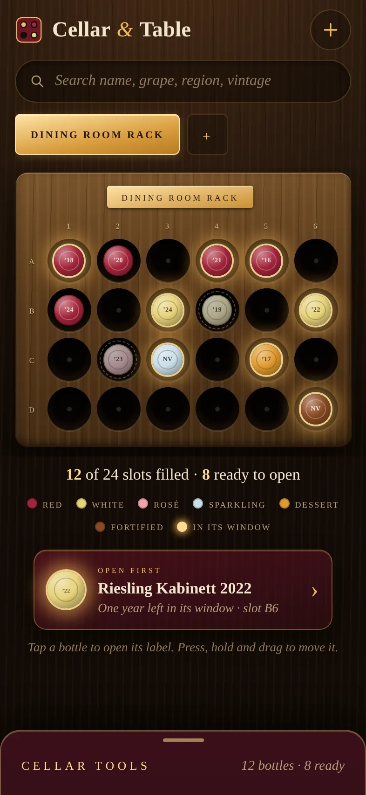
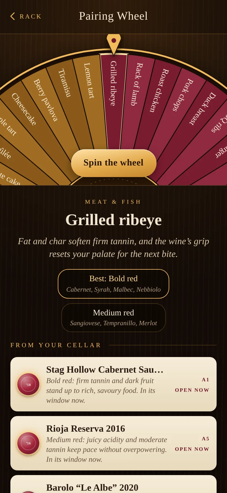
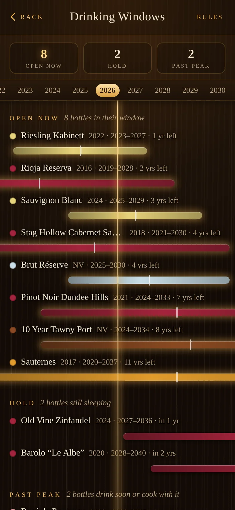
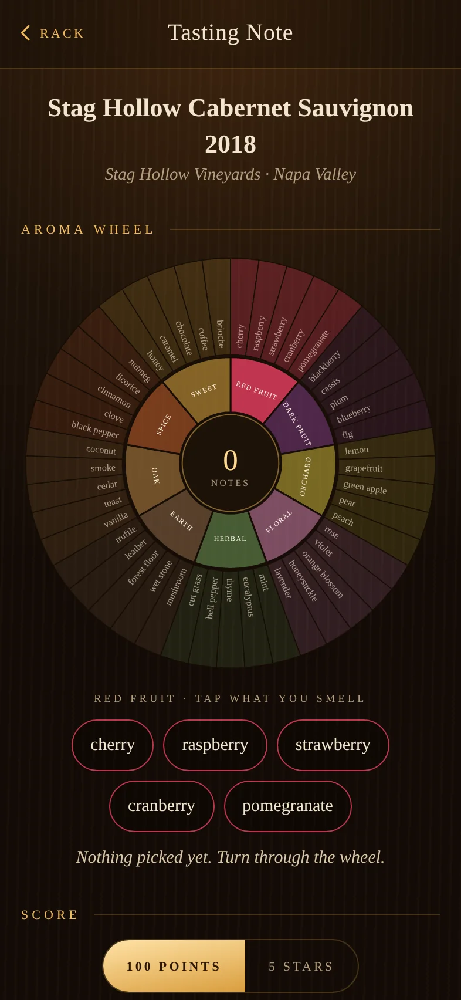

Your rack, your table.
Cellar & Table puts your real wine rack on the screen, slot for slot. Bottles glow when they are ready to drink, and tonight’s dinner tells you which one to pull.
Coming to the App StoreFor iPhone.

The rack is the app
A home screen shaped like your shelf
Set the rows and columns once and every bottle sits where it really sits. Press, hold and drag when you move one. Search lights up the slots that match, so you walk straight to the bottle.
- Racks, fridges and cases, each with its own grid
- Capsule colours for red, white, rosé, sparkling, dessert and fortified
- An “open first” card for the bottle whose window closes soonest
Drinking windows
Know what to open and what to leave alone
Every bottle gets a drinking window from its type and vintage, and you can change the rules or set your own years. One timeline shows what is open now, what is still sleeping and what is past its best.

Pairing wheel
Spin a dish, find the bottle
Forty dishes, from grilled ribeye to lemon tart. Pick one and the wheel gives the wine styles that suit it, says why in one sentence, and lights the matching bottles you already own.
Tasting notes
An aroma wheel instead of a blank box
Tap what you smell, score it out of 100 or five stars, and say who you shared it with. Finished bottles move to a journal you can read back.

Made for adults who keep wine at home
Private
No account, no ads, no analytics in the app. Your cellar is stored on your phone.
Offline
Works in a basement with no signal. Export a backup file whenever you like.
21 and over
For adults of legal drinking age. Please enjoy wine responsibly.